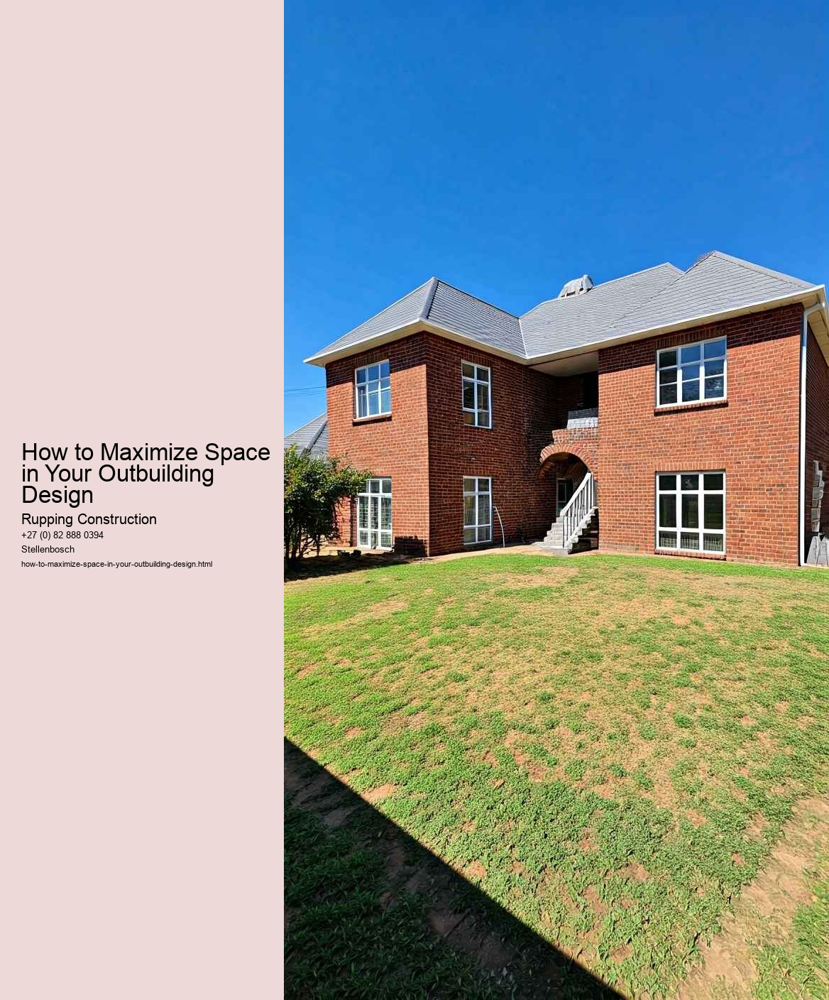

When it comes to maximizing space in your outbuilding design, the first step is to assess your specific needs. Outbuildings can serve a multitude of purposes, from storage for tools and equipment to creative spaces for hobbies or even home offices. Understanding your requirements will help you make informed decisions that optimize the space available.
Start by considering what you plan to use the outbuilding for. Are you looking for a workshop, a garden shed, a studio, or perhaps a combination of these? Each function has different spatial requirements. For instance, a workshop may need ample room for workbenches and tools, while a garden shed might require less space but necessitate organizational features like shelving and hooks for tools. Clearly defining the primary purpose of the outbuilding will guide your design process.
Next, think about the items or activities you intend to house within the space. Make a list of everything you want to include, from larger items like furniture or equipment to smaller items such as tools or supplies. This inventory will help you visualize how much space you truly need and identify potential areas for optimization. It's also helpful to consider future needs; if you anticipate acquiring more items or expanding your activities, factor that into your design.
Once you have a clear understanding of your needs, consider the layout of the outbuilding. A well-thought-out layout can make a significant difference in how effectively you use the space. Think about how you move within the space and how different areas interact. For instance, placing frequently used items within easy reach can reduce clutter and improve efficiency. Utilizing vertical space with shelves, pegboards, or wall-mounted storage solutions can free up valuable floor space, allowing for more flexible use of the area.
Additionally, consider the flow of light and ventilation in your outbuilding. Natural light can make a space feel larger and more inviting, while proper ventilation is crucial for workshops or spaces that may generate heat or odors. Installing windows or skylights can enhance the ambiance and encourage a productive environment.
Lastly, don't underestimate the importance of organization in maximizing space. Investing in storage solutions such as cabinets, bins, and modular shelving can help you keep everything in its place, reducing clutter and making the space more functional. Consider labeling storage areas to streamline access to your tools and materials.
In conclusion, assessing your outbuilding needs is a crucial first step in maximizing the space within your design. By understanding the intended use, inventorying your items, carefully planning the layout, considering natural light and ventilation, and implementing effective organization strategies, you can create an outbuilding that is not only functional but also a joy to use. The result will be a well-designed space that meets your needs and enhances your productivity.
When it comes to outbuilding design, maximizing space is often a primary concern. Whether you're transforming a shed into a cozy workshop, a garage into a home gym, or a garden house into a quaint studio, creative storage solutions are key to making the most out of every square inch. In small spaces, it's essential to think outside the box and embrace innovative ideas that not only save space but also enhance functionality and aesthetics.
One of the most effective ways to maximize storage is by utilizing vertical space. Tall shelving units can draw the eye upward and provide ample storage without consuming valuable floor area. Consider installing wall-mounted shelves to keep frequently used items accessible while freeing up counter space for other activities. Additionally, pegboards are a fantastic option for organizing tools and craft supplies, allowing for both visibility and easy access while keeping everything neatly in place.
Another clever solution is to embrace multi-functional furniture. Items that serve more than one purpose can significantly reduce clutter and optimize the space available. For instance, a storage bench can provide seating while also housing equipment or supplies inside. Similarly, tables with built-in drawers or foldable surfaces can adapt to your needs, whether youre hosting a gathering or simply enjoying a quiet moment.
Don't overlook the potential of hidden storage, which can be a game-changer in small spaces. Consider utilizing the space under furniture, such as beds or benches, to tuck away seasonal items or rarely used tools. Furthermore, built-in cabinetry can be designed to blend seamlessly with the overall aesthetic of the outbuilding, providing a clean and organized look while maximizing storage capacity.
To make the most of your outbuilding design, it's also important to embrace creative storage solutions that reflect your personal style. Use decorative baskets or stylish boxes to store items while adding a touch of charm to the space. Labeling containers can help maintain organization and ensure that everything has a designated place, making it easier to find what you need when you need it.
Lastly, consider the importance of decluttering as part of your storage strategy. Regularly assessing what you truly need and what can be discarded or donated can free up valuable space and create a more functional environment. By adopting a minimalist mindset, you can make better choices about what to keep and how to store it.
In conclusion, maximizing space in your outbuilding design requires a thoughtful approach to storage solutions. By utilizing vertical space, incorporating multi-functional furniture, exploring hidden storage options, and embracing your personal style, you can create a functional and aesthetically pleasing environment. With a little creativity and planning, even the smallest outbuilding can become a well-organized, efficient space that meets your needs and inspires your creativity.
When it comes to outbuilding design, maximizing space is a key consideration that can significantly enhance functionality and utility. Whether you're transforming a shed into a workshop, a garage into a studio, or a garden house into a guest room, multi-functional design ideas can help you make the most of your available area.
One of the most effective strategies for maximizing space is to think vertically. Utilizing vertical space allows you to keep the floor area open and organized. Installing shelves, cabinets, or pegboards that reach up to the ceiling can provide ample storage for tools, equipment, or personal belongings without consuming precious floor space. Additionally, consider incorporating lofted areas or raised platforms, which can serve as extra storage or even sleeping quarters, depending on your needs.
Another important aspect of multi-functional design is versatility in furniture and fixtures. Opt for foldable or collapsible furniture that can be easily stored away when not in use. For example, a fold-down table can serve as a workbench during the day and transform into a dining area in the evening. Similarly, modular seating that can be rearranged or stacked can adapt to different activities and gatherings. This flexibility not only maximizes space but also enhances the overall functionality of the outbuilding.
Incorporating multi-use areas is also a smart strategy. Rather than designating a single space for a specific purpose, create zones that can serve multiple functions. For instance, a workshop area can double as a craft space, or a garage can be designed to accommodate both vehicles and hobbies. By creating adaptable zones, you can ensure that the outbuilding remains relevant to your evolving needs over time.
Natural light plays a crucial role in making a space feel larger and more inviting. Consider incorporating large windows, skylights, or glass doors to brighten the interior and create an open, airy atmosphere. Not only do these features enhance visibility, but they also foster a connection with the outdoors, making the outbuilding a more enjoyable and productive space.
Lastly, don't underestimate the power of organization. A well-organized outbuilding can significantly enhance functionality and make even the smallest spaces feel more spacious. Invest in storage solutions that help you keep everything in its place. Clear bins, labeled containers, and designated workstations can help minimize clutter, allowing you to navigate and utilize your outbuilding more effectively.
In conclusion, maximizing space in your outbuilding design involves a combination of vertical utilization, versatile furnishings, multi-use areas, natural light, and effective organization. By integrating these multi-functional design ideas, you can create a space that is not only practical and efficient but also enjoyable to use. Whether for work, leisure, or storage, a well-designed outbuilding can be a valuable addition to your property, enhancing your lifestyle and meeting your diverse needs.
Incorporating natural light and ventilation is key to maximizing space in your outbuilding design. Whether you are creating a garden shed, a home office, or a small guesthouse, the way you use light and air can significantly affect the functionality and ambiance of the space.
Natural light is a powerful tool in design. It not only brightens up a space, making it feel larger and more inviting, but it also contributes to our overall well-being. When planning your outbuilding, consider the orientation of windows and doors. South-facing openings will capture the most sunlight throughout the day, while strategically placed skylights can draw light from above, especially in areas where wall space is limited. Transparent or translucent materials, such as glass or polycarbonate panels, can be used to enhance the flow of light while maintaining privacy.
In addition to aesthetics, natural light can reduce your reliance on artificial lighting, saving energy and creating a more sustainable environment. Utilizing light shelves or reflective surfaces can help bounce sunlight deeper into the room, maximizing its reach and ensuring that even the furthest corners are illuminated.
Ventilation is equally important in creating a comfortable and functional outbuilding. Proper airflow helps regulate temperature, reduce humidity, and improve air quality. Incorporating operable windows, vents, or even a ceiling fan can facilitate cross-ventilation, allowing fresh air to circulate freely. This is particularly beneficial in spaces that may be used for activities such as crafting or cooking, where moisture and odors can accumulate.
In addition to enhancing comfort, good ventilation can also help preserve the structure of your outbuilding. Excess moisture can lead to mold and mildew, which can damage both the interior and exterior. By designing your space with ventilation in mind, you can mitigate these risks and ensure a healthier environment.
Combining natural light and ventilation creates a harmonious balance that can transform an outbuilding from a mere structure into a vibrant, functional space. The strategic placement of windows, the use of skylights, and the incorporation of airflow mechanisms all contribute to a design that feels open and airy. Ultimately, these elements not only maximize the physical space but also enhance the overall experience of being in that environment. By prioritizing natural light and ventilation in your outbuilding design, you can create a space that is not only beautiful but also practical and inviting.
Checklist for Compliance in Outbuilding Construction Projects
How to Plan Your Outbuilding Construction Project Effectively